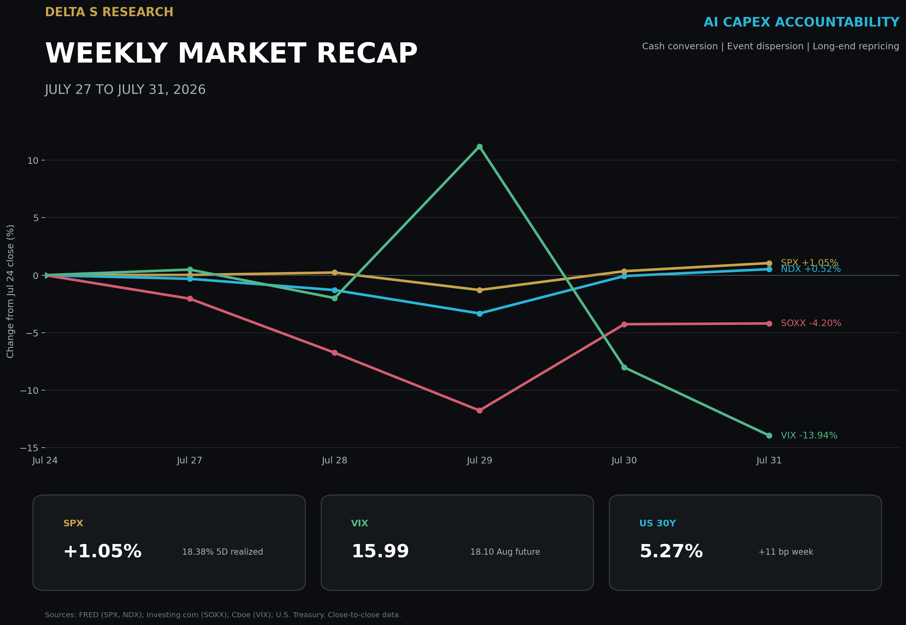
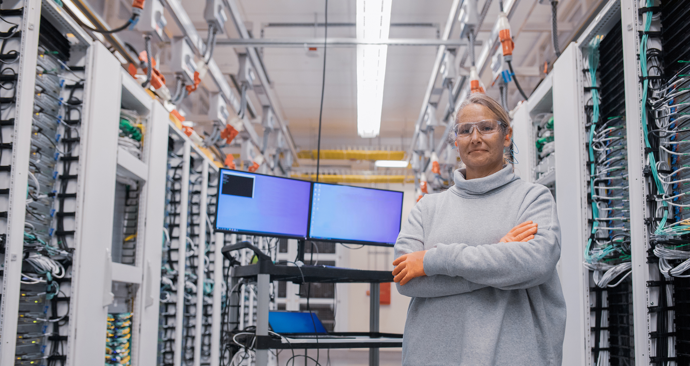
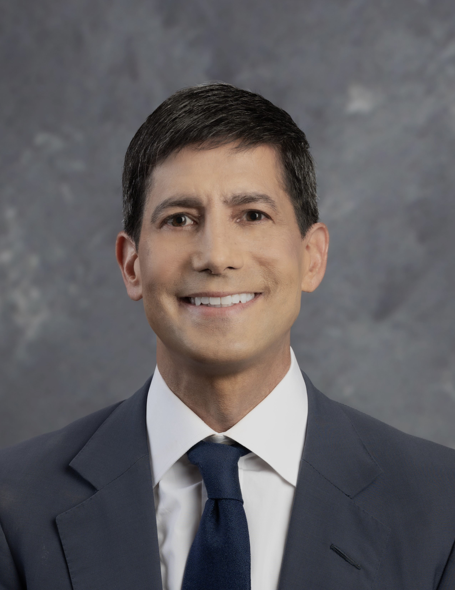

The Week in Five Bullets
- The headline gain concealed a narrower and more unstable tape. SPX rose 1.05% to 7,489.72 and Nasdaq Composite gained 1.59%, while NDX added only 0.52% and the SOXX ETF lost 4.20% on a close-to-close basis. On Friday, declining SPX constituents outnumbered advancers 1.3 to 1 even as SPX gained 0.70%; 20.6 billion U.S. shares traded versus a 20-session average of 17.1 billion.
- Microsoft established the week's valuation benchmark: capex required visible cash conversion. Fiscal fourth-quarter revenue reached USD 90.0 billion, up 18%, Azure revenue grew 43%, and quarterly capex was USD 41.0 billion. Free cash flow remained USD 19.6 billion, so the market could connect incremental capacity to utilization and cash; Microsoft rose more than 15% on Thursday.
- Meta showed that revenue growth alone did not clear the same hurdle. Second-quarter revenue increased 28% to USD 60.80 billion, but quarterly free cash flow was only USD 784 million after USD 31.08 billion of capex. Meta narrowed 2026 capex guidance to USD 130 billion to USD 145 billion, and its shares declined nearly 9% in the next session.
- Amazon and Apple produced a 22.67 percentage point earnings-day spread. Amazon gained 15.32% on Friday after AWS sales rose 37% to USD 42.2 billion and AWS operating income reached USD 16.6 billion. Apple fell 7.35% despite 16% revenue growth to USD 109.4 billion because supply constraints and pricing raised questions about the next quarter's volume path.
- Rates did not validate the equity market's lower closing volatility. The Federal Reserve held the target range at 3.50% to 3.75% by a 9 to 3 vote, with three presidents preferring a 25 bp increase. The U.S. Treasury's 10-year CMT rose 6 bp on the week to 4.75% and the 30-year rose 11 bp to 5.27%; CME FedWatch's September hike probability ended at 65%, down from 82% one week earlier.
The Week's Dominant Narrative
- The market changed the AI question from how much to how quickly the spend converts. The four largest earnings reactions did not rank companies by capex size. They ranked the visibility of demand absorption, unit economics, and cash generation, creating two positive reactions above 15% and two negative reactions near 7% to 9%.
- Microsoft connected capacity, consumption, and cash in one operating chain. Azure grew 43% as capacity delivered earlier in the quarter was monetized quickly, while Microsoft Cloud revenue rose 27% to USD 59.3 billion. The company produced USD 55.4 billion of operating cash flow and USD 19.6 billion of free cash flow despite USD 41.0 billion of quarterly capex; that combination reduced uncertainty around the timing of returns.
- Amazon earned more tolerance for a larger 2026 investment plan. AWS contributed USD 16.6 billion, or 60.4%, of Amazon's USD 27.5 billion quarterly operating income, and AWS sales grew 37%, the fastest rate in 18 quarters. The constraint remains funding: trailing 12-month free cash flow was negative USD 7.6 billion and the reported 2026 spending plan is USD 220 billion. Customer reservations for most 2027 capacity made the near-term cash deficit easier for the market to underwrite.
- Meta's unresolved issue was cash conversion, not the existence of demand. Ad impressions rose 14% and average price per ad rose 12%, supporting 28% revenue growth. Yet costs increased 55% to USD 42.03 billion, including USD 2.40 billion of legal charges and USD 1.18 billion of severance, while quarterly free cash flow fell to USD 784 million; the market therefore assigned less value to the same category of infrastructure spend.
- Apple showed that the week's bottlenecks extended beyond data centers. Fiscal third-quarter revenue increased 16% and gross margin reached 50.1%, though tariff refunds added about 2 percentage points to gross margin and USD 0.11 to diluted EPS. The 7.35% share decline followed a supply constraint warning, showing that product availability and pricing elasticity can dominate a strong reported quarter when forward volume is less certain.

What Volatility Markets Priced
- Friday's implied volatility reset below the volatility already realized during the week. VIX closed at 15.99, down 13.94% from July 24, while SPX five-session realized volatility was 18.38%. The realized measure is the sample standard deviation of five daily log returns annualized by the square root of 252; the comparison indicates that option prices normalized after the event cluster even though the completed path was not low-volatility.
- Index calm obscured substantially larger technology and semiconductor movement. Using the same five-session method, NDX realized volatility was 32.37% and SOXX ETF realized volatility was 87.66%. SOXX still lost 4.20% for the week despite an 8.50% rebound on Thursday, a path that cannot be inferred from SPX's 1.05% weekly gain.
- Earnings-day dispersion was the primary tradable volatility expression. Amazon's 15.32% gain and Apple's 7.35% decline created a 22.67 percentage point spread on Friday. On Thursday, Microsoft's 15.5% gain versus Meta's nearly 9% decline produced a spread greater than 24 percentage points; company-specific cash conversion mattered more than a common mega-cap factor.
- Breadth confirmed concentration, but it did not prove that correlation fell. Friday produced 131 Nasdaq new lows versus 52 new highs, and SPX decliners exceeded advancers by 1.3 to 1. Those figures show that index direction was not representative of the median security; no weekly constituent correlation series was available, so this report does not label the move a verified correlation decline.
- The equity and rates volatility surfaces finished with different messages. VIX spot ended at 15.99, while the August 19 VIX future settled at 18.1046 and the September future at 19.2499, leaving forward volatility above spot. At the same time, the 30-year CMT reached 5.27%, 11 bp above July 24; equity options priced the earnings event cluster as largely cleared, while duration retained inflation and policy uncertainty.

Cross Asset Signals
- The long end delivered the week's clearest macro tightening signal. The 10-year CMT moved from 4.69% to 4.75%, while the 30-year moved from 5.16% to 5.27%. The 5 bp increase in the 10s30s slope points to term-premium and inflation credibility concerns rather than a pure near-term policy move.
- Both crude benchmarks fell, but the path remained event-dependent. Brent settled at USD 90.12 per barrel versus USD 96.78 on July 24, down 6.88%. WTI settled at USD 84.67 versus USD 89.31, down 5.20%; Monday's declines followed a pause in U.S. strikes, before supply concerns recovered part of the move.
- DXY weakened even as long yields rose. DXY closed at 99.80 versus 101.47 on July 24, a 1.65% decline. That combination suggests the long-end move was not simply a broad USD growth premium; U.S. policy credibility and yen-related flows were also part of the repricing.
- Gold did not fully monetize the weaker dollar. COMEX front-month gold ended at USD 4,049.50 per troy ounce versus USD 4,070.80 on July 24, down 0.52%. Friday's 1.3% decline accompanied higher Treasury yields, offsetting currency support.
- Bitcoin underperformed U.S. equities at the same closing convention. Coinbase Bitcoin was USD 62,886.64 at 5:00 p.m. Pacific on July 31 versus USD 64,108.38 on July 24, a 1.91% decline. The crypto asset did not participate in SPX's 1.05% weekly gain, consistent with sensitivity to the higher policy-rate distribution and weaker crypto trading activity.
- Fund flows favored large-cap and technology exposure rather than broad risk-taking. U.S. equity funds received USD 11.83 billion in the week ended July 29, their first inflow in three weeks; large-cap funds took USD 11.57 billion and technology funds USD 4.90 billion. Mid-cap funds lost USD 2.29 billion and small-cap funds lost USD 196 million, matching the narrowness visible in index breadth.
- The policy event increased institutional disagreement without delivering an immediate hike. The FOMC held 3.50% to 3.75%, but the 9 to 3 vote placed three regional bank presidents on the side of a 25 bp increase. CME FedWatch still assigned 65% to a September hike, so Friday's lower VIX did not remove the policy catalyst from the next six weeks.
Structural Fragilities
- Index exposure now embeds earnings-gap concentration risk. Two single names gained more than 15% after results while two peers declined roughly 7% to 9%, yet SPX ended the week only 1.05% higher. A short index-volatility position therefore carries hidden exposure to whether a small number of mega-cap earnings gaps offset each other rather than reinforce each other.
- Reported capex is becoming less comparable across firms and across time. Microsoft extended estimated useful lives for data centers and office buildings from 15 to 25 years and expects more leases to be classified as operating rather than finance leases. The change affects the timing and classification of reported capex and depreciation but does not by itself create cash; valuation work must stay anchored to operating cash flow, lease commitments, and free cash flow.
- A low VIX and a rising long bond can be a fragile portfolio combination. VIX ended below 16 while the 30-year CMT increased 11 bp to 5.27%. Portfolios relying on duration to hedge equity drawdowns remain exposed if the next shock is inflationary, because bonds and long-duration equities can lose value together even when index option volatility starts from a moderate level.
- CTA amplification remained a conditional risk, not a verified weekly flow. NDX realized volatility reached 32.37% and SOXX ETF realized volatility reached 87.66% on the five-session annualized measure, yet SPX still gained 1.05%. That combination does not establish a broad trend-following unwind. Further Nasdaq weakness could force slower models to reduce equity beta, but the mechanism requires current model-flow data before it can be described as an observed sale.
- The next policy repricing is unusually sensitive to a single labor release. The September hike probability fell from 82% to 65% during a week when three FOMC voters preferred an immediate increase. With July employment due August 7 at 8:30 a.m. ET, a material surprise can move the front end, the dollar, and equity discount rates in the same session.
- When VIX closes at 15.99 while SOXX five-session realized volatility is 87.66%, risk has not disappeared; it has migrated from index beta into company selection and the curve.
What We Are Watching Next
- Monday, August 3, 10:00 a.m. ET (10:00 p.m. Beijing): July ISM Manufacturing PMI. New orders and prices will test industrial demand and inflation transmission.
- Tuesday, August 4, 8:30 a.m. ET (8:30 p.m. Beijing): Caterpillar second-quarter earnings call. Orders and dealer inventories will test industrial breadth outside mega-cap technology.
- Tuesday, August 4, 10:00 a.m. ET (10:00 p.m. Beijing): June JOLTS. Vacancies and quits will refine the labor-demand path.
- Tuesday, August 4, 5:00 p.m. ET (Wednesday, August 5, 5:00 a.m. Beijing): AMD second-quarter call. Data-center revenue, GPU supply, and margin guidance will test the semiconductor rebound.
- Wednesday, August 5, 10:00 a.m. ET (10:00 p.m. Beijing): July ISM Services PMI. Prices paid and employment feed directly into core inflation and payroll expectations.
- Thursday, August 6, 8:30 a.m. ET (8:30 p.m. Beijing): preliminary second-quarter productivity and unit labor costs. The release measures how much nominal growth productivity can absorb.
- Thursday, August 6, 8:30 a.m. ET (8:30 p.m. Beijing): weekly initial jobless claims. Claims are the last high-frequency labor reading before payrolls.
- Friday, August 7, 8:30 a.m. ET (8:30 p.m. Beijing): July Employment Situation. Payrolls, unemployment, and wages will test the 65% September hike probability.
Sources and References
- Federal Reserve: July 29 FOMC statement
- U.S. Treasury: daily CMT rates
- Cboe: VIX spot
- Cboe: VIX futures
- CME Group: FedWatch methodology and probabilities
- FRED: S&P 500 Index
- FRED: Nasdaq 100 Index
- Investing.com: SOXX ETF historical closes
- FRED: Coinbase Bitcoin price
- Microsoft Investor Relations: fourth-quarter results
- Microsoft Investor Relations: earnings call
- Meta Investor Relations
- Amazon Investor Relations
- Apple Newsroom
- Reuters: July 31 U.S. market close
- Reuters: July 30 U.S. market close
- Reuters: Amazon and AWS earnings reaction
- Reuters: July 31 crude oil settlements
- Reuters: July 24 crude oil settlements
- MarketWatch: DXY
- Investing.com: COMEX gold historical data
- Reuters: July 31 gold market
- Reuters: U.S. fund flows
- BLS: August 2026 release calendar
- ISM: manufacturing PMI calendar
- ISM: services PMI calendar
- AMD Investor Relations
- Caterpillar Investor Relations
- U.S. Department of Labor: weekly claims
- Microsoft Newsroom: official datacenter image gallery
- Federal Reserve: Kevin Warsh official portrait
- U.S. Navy: USNS Leroy Grumman transiting the Strait of Hormuz